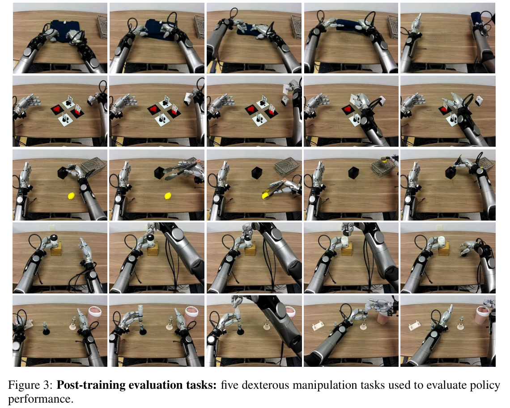
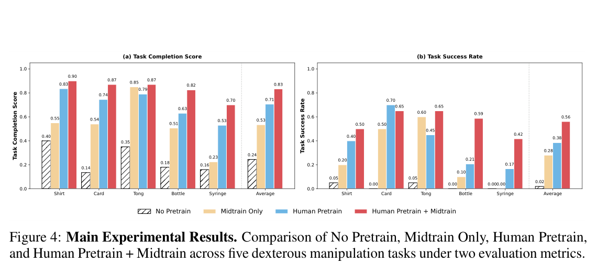
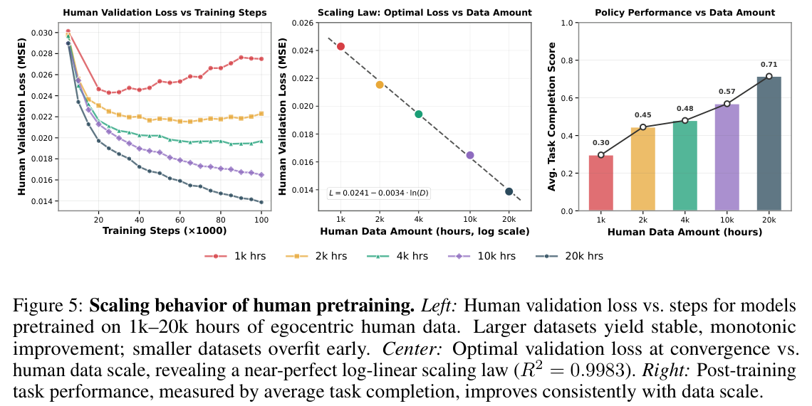
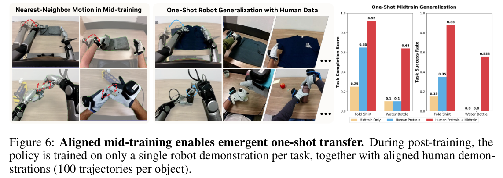
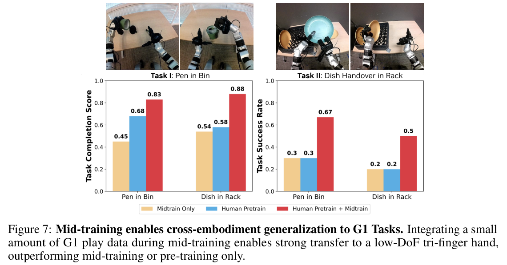
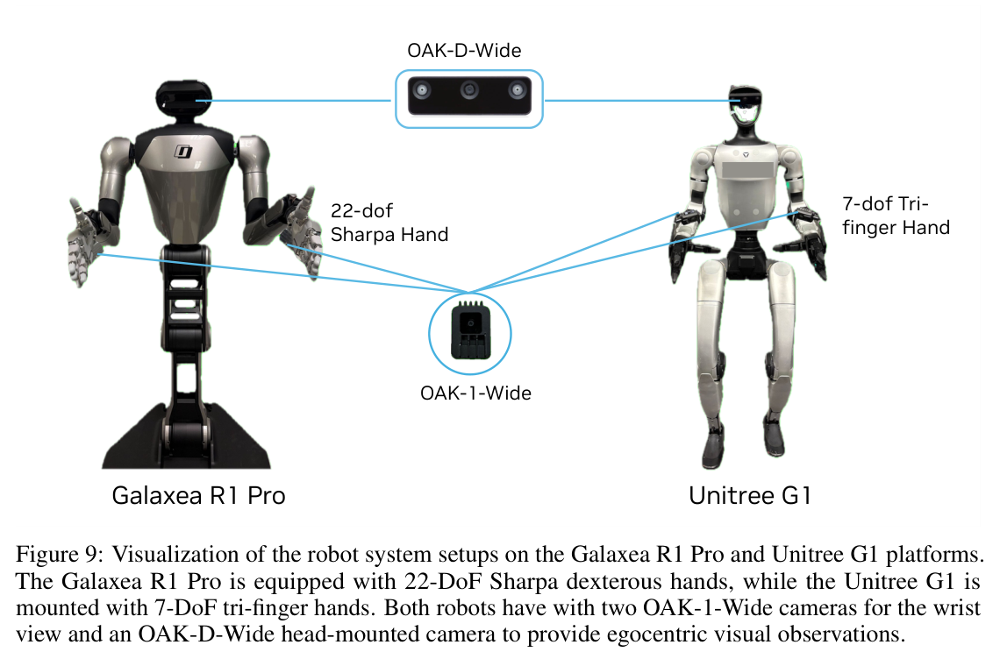
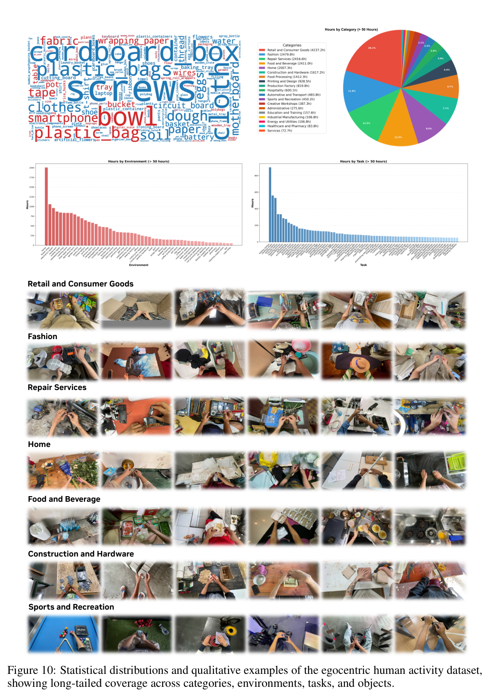

![Figure 1: EgoScale: Two-stage human-to-robot learning framework. A flow-based Vision-Language-Action (VLA) policy is first pretrained on 20,854 hours of egocentric human videos using wrist motion and retargeted dexterous hand actions. A lightweight mid-training stage with aligned human robot play data (pairs highlighted with green and gray boundaries) adapts the representation to robot sensing and control. The resulting policy is post-trained on downstream tasks, enabling efficient learning of dexterous manipulation and one-shot generalization to unseen skills from a single robot demonstration.](fig1.png)
HTML version made by Claude (claude-opus-5-5) from the PDF; check the PDF for exact wording and figures.
Ruijie Zheng1∗, Dantong Niu1,2∗, Yuqi Xie1∗, Jing Wang1, Mengda Xu1, Yunfan Jiang1, Fernando Castañeda1, Fengyuan Hu1, You Liang Tan1, Letian Fu1,2, Trevor Darrell2, Furong Huang3, Yuke Zhu1†, Danfei Xu1†, Linxi Jim Fan1†
1NVIDIA 2University of California, Berkeley 3University of Maryland
∗Equal Contribution †Project Lead
https://research.nvidia.com/labs/gear/egoscale/
Abstract: Human behavior is among the most scalable sources of data for learning physical intelligence, yet how to effectively leverage it for dexterous manipulation remains unclear. While prior work demonstrates human-to-robot transfer in constrained settings, it is unclear whether large-scale human data can support fine-grained, high-degree-of-freedom dexterous manipulation. We present EgoScale, a human-to-dexterous-manipulation transfer framework built on large-scale egocentric human data. We train a Vision–Language–Action (VLA) model on over 20,854 hours of action-labeled egocentric human video—more than 20× larger than prior efforts—and uncover a log-linear scaling law between human data scale and validation loss. This validation loss strongly correlates with downstream real-robot performance, establishing large-scale human data as a predictable supervision source. Beyond scale, we introduce a simple two-stage transfer recipe: large-scale human pretraining followed by lightweight aligned human–robot mid-training. This enables strong long-horizon dexterous manipulation and one-shot task adaptation, in which human demonstrations replace all but a single robot demonstration. Our final policy improves average success rate by 54% over a no-pretraining baseline using a 22-DoF dexterous robotic hand, and transfers effectively to robots with lower-DoF hands, indicating that large-scale human motion provides a reusable, embodiment-agnostic motor prior.
Keywords: Dexterous Manipulation, Egocentric Human Data, Vision-Language-Action Models
Human behavior is among the most scalable sources of data for learning physical intelligence, performed across diverse objects, environments, and tasks at a scale far beyond what robot teleoperation can provide. As robot hardware moves toward human-like kinematics and dexterity, a natural question arises: can human data serve as a primary training signal for dexterous robot manipulation?
Recent work shows that human-to-robot transfer is possible by aligning observations or actions across embodiments [1, 2, 3, 4, 5]. However, existing studies typically use tens to hundreds of hours of human data and focus on grippers or low-DoF hands, so it remains unclear whether human data can support complex, dexterous manipulation at scale.
In this work, we argue that human-to-robot transfer for dexterous manipulation is fundamentally a scaling phenomenon, and present EgoScale, a scalable human-to-dexterous-manipulation framework built on large-scale egocentric human data. We pretrain on 20,854 hours of egocentric human manipulation data, over 20× larger than prior human–robot transfer datasets, and uncover a clear scaling law: human wrist and hand action prediction validation loss follows a log-linear relationship with data volume, and this loss strongly correlates with real-robot performance on long-horizon dexterous tasks. Together, these results establish large-scale human data as a scalable and predictable supervision source for dexterous manipulation policies.
Beyond scale, we identify a simple yet effective training recipe. We supervise the model with human manipulation behaviors represented as relative wrist motion and retargeted high-DoF hand joint actions, encouraging it to extract information directly useful for manipulation. After pretraining, a small amount of aligned human–robot mid-training data grounds the pretrained representations in the robot’s sensing and control space. This mid-training stage gives rise to emergent one-shot generalization: with a single robot teleoperation demonstration plus aligned human demonstrations, the policy achieves up to 88% success on shirt folding, even though the mid-training data contains only folding behaviors. Here, “one-shot” counts robot demonstrations only: abundant human data replaces costly robot teleoperation during downstream adaptation. The learned representations also generalize across embodiments. On the Unitree G1 with a tri-finger hand, human-pretrained policies achieve over 30% absolute improvement in success rate over a no-pretraining baseline.
Taken together, these results show that effective dexterous human-to-robot transfer requires scale, explicit motion supervision, and a small amount of precise human–robot alignment. Our contributions are:
We aim to learn representations from large-scale egocentric human video that are directly useful for dexterous robot control. This setting poses two challenges: human demonstrations are noisy and lack paired robot actions, and human and robot embodiments differ in kinematics and control. Our method (Figure 1) addresses both with two design choices. We pretrain on human data using explicit supervision of wrist motion and hand articulation extracted from egocentric videos, forcing the model to learn physically grounded action representations. We then introduce a small amount of aligned human–robot data for mid-training, grounding these representations in executable robot control without requiring large-scale paired demonstrations. This decouples data scale from embodiment alignment, enabling effective transfer from large human datasets to dexterous robot manipulation.
Raw Sensor Streams. Each demonstration consists of egocentric RGB observations from a head-mounted camera, plus estimated camera motion and human hand pose obtained from off-the-shelf perception pipelines. Let \(\mathcal{F}_w\) and \(\mathcal{F}_c^t\) denote the world and camera frames at time \(t\). The estimated camera pose is \(\mathbf{T}^t_{w\leftarrow c} \in \mathbb{SE}(3)\), and the human hand is modeled as 21 keypoints \(\mathbf{H}^t_{c,i} \in \mathbb{SE}(3)\) in the camera frame, with \(i = 1\) the wrist. The wrist pose in the world frame is \(\mathbf{W}^t_w = \mathbf{T}^t_{w\leftarrow c}\mathbf{H}^t_{c,1}\).
Wrist-level Arm Motion. For invariance to global camera movement, arm motion is represented as relative wrist motion w.r.t. the first frame of an action chunk: \(\Delta\mathbf{W}^t = (\mathbf{W}^0_w)^{-1}\mathbf{W}^t_w\). The same representation is shared by human and robot data and serves as the primary arm-level action abstraction for cross-embodiment learning.
Hand Articulation. For finger-level control, we retarget the 21 human hand keypoints into a dexterous robot hand joint space using an optimization-based procedure that enforces joint limits and kinematic constraints. Our default is the 22-DoF Sharpa hand [6] action space, which preserves human finger articulation during pretraining while matching our target robot. We later show that representations learned with this high-DoF supervision transfer to lower-DoF hands.
Stage I: Large-Scale Egocentric Human Pretraining Data. We pretrain on a mixture of egocentric human activity datasets totaling 20,854 hours of video. The majority is in-the-wild egocentric recordings spanning household, industrial, retail, and educational settings, covering 9,869 scenes, 6,015 tasks, and 43,237 objects. All recordings are at 30 FPS; we apply off-the-shelf SLAM and hand-pose pipelines to recover camera motion and hand trajectories, with only lightweight filtering: episodes are split into sub-trajectories whenever a hand leaves the frame, and segments with implausible wrist drift (estimated wrist speed > 2 m/s) are discarded (App. C.6). Although noisy due to unconstrained collection, scale and diversity provide effective supervision that continues to improve downstream performance as data grows. We additionally include 829 hours of EgoDex [7], captured with Apple Vision Pro, which provides higher-precision kinematic signals across 194 tabletop manipulation tasks.
Stage II: Aligned Human-Robot Mid-Training Data. To bridge the embodiment gap, we collect a smaller dataset with both human and teleoperated robot data: 344 tabletop manipulation tasks with ∼30 human and 5 robot trajectories each, totaling ∼50 hours of human and ∼4 hours of robot data. As shown in Figure 2a, human demonstrations use the same camera configuration as the robot, with matched viewpoints and calibrated intrinsics. Hand motion is captured with the same stack as robot teleoperation: Vive trackers for wrist pose and Manus gloves for 25 in-hand joint transforms, all synchronized with the video. Compared to Stage I, this dataset is smaller but explicitly embodiment-aligned, providing the human–robot correspondence needed to ground human actions in executable robot control.
As shown in Figure 2b, our model is a flow-based VLA following GR00T N1 [8]. At each timestep \(t\), the model conditions on an observation \(o_t = (I_t, l_t)\), encoded into a vision-language embedding \(\phi_t\), and predicts a chunk of future actions via flow matching. For robot data, the model also conditions on proprioception \(q_t\); for human data, \(q_t\) is replaced by a learnable proprio-mask token, unifying the formulation without architectural changes. For additional embodiments (e.g., G1 with a tri-finger hand), we use embodiment-conditioned MLP adapters at the state encoder and action decoder; relative wrist prediction, the vision-language backbone, and the DiT action expert are fully shared.
![Figure 2: Human Data Collection and Model Architecture. (Left) Aligned human–robot mid-training data are collected with the same sensing setup as the robot: Vive trackers and Manus gloves capture arm and hand motion; one head-mounted and two wrist-mounted cameras record egocentric and wrist views. (Right) A flow-based VLA policy with a VLM backbone and DiT action expert. Human and robot data share a wrist-level action representation, with lightweight embodiment-specific adapters for proprioception and hand actions.](fig2.png)
We use a three-stage pipeline. In Stage I (human pretraining) we train for 100K steps on 20K hours of egocentric human data with 256 GB200 GPUs, global batch 8,192, lr \(5 \times 10^{-5}\), all VLA parameters unfrozen. In Stage II (aligned mid-training) we train for 50K steps with batch 2,048, lr \(3 \times 10^{-5}\), freezing the vision-language backbone and updating only the vision encoder and DiT action expert. In Stage III (post-training) we fine-tune on task-specific robot demonstrations for 10K steps with batch 512, lr \(3 \times 10^{-5}\); the vision encoder is frozen if Stage II is used and unfrozen otherwise.
Real-world experiments use the Galaxea R1Pro humanoid robot with 22-DoF Sharpa dexterous hands (system figure in App. A). The base and torso are fixed, and both 7-DoF arms are controlled in relative end-effector space to match the human wrist representation. Hands are controlled in 22-DoF joint space, preserving the fine structure of retargeted human hand motion. Perception uses three oak RGB cameras: a head-mounted egocentric view consistent with human videos, and two wrist-mounted cameras facing the palm for close-range hand-object interactions.
We aim to answer the following research questions: (RQ1) Does large-scale egocentric human pretraining improve downstream dexterous manipulation versus training from scratch or aligned data alone? (RQ2) How does the scale of human pretraining data affect representation quality and real-robot performance? (RQ3) What role does mid-training play in enabling few-shot adaptation to novel tasks? (RQ4) Do human-pretrained representations transfer across robot embodiments with different kinematics and control interfaces? (RQ5) How does the choice of human action representation during pretraining affect downstream performance?
Tasks. We design five highly dexterous manipulation tasks (Figure 3), each with 100 teleoperated robot demonstrations (20 for Shirt Rolling, which is deformable but requires less precise control): (I) Shirt Rolling: coordinate both hands to fold and roll a T-shirt into a cylinder and place it in a basket. (II) Card Sorting: rub and separate a single card from a stacked deck, then insert it into the correct color holder. (III) Tongs for Fruit Transfer: grasp tongs from a toolbox and use them to pick up a fruit and place it at a target. (IV) Unscrewing a Bottle Cap: grasp and continuously rotate a small cap; 25 trajectories on each of four bottle sizes. (V) Syringe Liquid Transfer: pick up a syringe, draw liquid from tube A, inject it into tube B, and discard the syringe. This is a long-horizon task requiring precise spatial alignment and plunger control.

Evaluation Metric. Each method is trained with two random seeds. For each checkpoint we evaluate over 10 trials per task, except Task IV, where we run 4 trials per bottle across four bottles (16 trials total). We use an image-overlay–based initialization to ensure consistent initial conditions, and report both absolute task success rate and a fine-grained task completion score.
We compare four checkpoints: (1) trained from scratch, (2) pretrained only on the aligned mid-training human–robot dataset, (3) pretrained on large-scale human data, and (4) human-pretrained then mid-trained on aligned human–robot data. Results are summarized in Figure 4.
Across all tasks, human pretraining consistently yields large gains over training from scratch, improving average task completion by over 55%. Notably, large-scale human pretraining already outperforms the mid-training-only baseline on most tasks despite being noisy, unconstrained, and not task- or sensor-aligned. This evidences that scale and diversity of human demonstrations provide strong inductive biases for dexterous manipulation even without precise embodiment alignment. Combining human pretraining with a small amount of aligned mid-training yields the best overall performance, suggesting a complementary effect: large-scale human data supplies general manipulation structure, and mid-training anchors these representations to executable robot control. Since Midtrain Only and Human Pretrain + Midtrain are trained on exactly the same Stage-II data, including the same scenes, their gap here and in Figs. 6–7 cannot stem from scene overlap between mid-training and evaluation; it isolates the effect of large-scale human pretraining.


Human vs. robot data in mid-training. Mid-training on only the robot or only the human portion of Stage II yields task completion (success rate) of 0.75 (40%) / 0.16 (0%) and 0.80 (60%) / 0.48 (9%) on Tongs / Bottle, respectively, versus 0.87 (65%) / 0.82 (59%) for joint human–robot mid-training (App. E.3). Robot-only mid-training tends to overfit to proprioceptive cues and generalizes poorly to object-pose variation, often breaking the unscrewing behavior. We attribute this partly to the small robot set (4 hours), whereas co-training with human data grounds the same motions with far greater spatial diversity.
We pretrain models on 1k, 2k, 4k, 10k, and 20k hours of human data and directly post-train on the downstream tasks (no Stage II) to isolate scale effects. As shown in Figure 5 (right), average task completion rises monotonically from 0.30 at 1k hours to 0.71 at 20k hours, with no sign of saturation.
We also evaluate each pretrained model on a held-out human validation set of 2,000 episodes (20 timesteps per trajectory, 16 samples per step from the flow-matching policy, averaged MSE against ground-truth wrist and hand actions). Models trained on 1k–2k hours plateau or degrade (Figure 5, left), indicating overfitting, while 10k–20k hours show stable monotonic improvement. Plotting optimal validation loss against data scale (Figure 5, center) reveals a clean log-linear scaling law,
\[\mathbf{L} = \mathbf{0.0241} - \mathbf{0.0034} \cdot \ln(\mathbf{D}), \tag{1}\]where \(D\) is hours of human pretraining data, with \(R^2 = \mathbf{0.9983}\). Crucially, this offline behavior is strongly predictive of real-robot performance: human validation loss tracks downstream task completion across scales, making it a meaningful indicator of embodied control capability. Together, these results show that effective human-to-robot transfer for dexterous manipulation is fundamentally a scaling phenomenon, with predictable returns and substantial headroom for further gains as data and model capacity grow.

We evaluate whether aligned mid-training enables learning previously unseen skills under extremely limited robot supervision. Starting from a human-pretrained model, we apply mid-training and post-train on new tasks with a single robot demonstration, supplemented by aligned human demonstrations. We consider Fold Shirt (1 robot + 100 human demos) and Unscrewing Water Bottles (1 robot + 100 human demos per bottle, three bottle geometries); neither task appears in the mid-training data. Here, “one-shot” refers to the single robot teleoperation demonstration: abundant human demonstrations replace costly robot teleoperation data during adaptation.
As shown in Figure 6, models that omit either large-scale human pretraining or aligned mid-training fail. The Pretrain + Midtrain model achieves 88% success on Fold Shirt and 56% on Unscrewing Water Bottles; failures are typically partial (incomplete folds or unstable grasps after cap removal). This generalization is enabled by shared motion structure: although objects and task instances differ, mid-training exposes the model to common motion primitives that transfer with a single target-robot demonstration.
Zero robot demonstrations. Post-training on the human demonstrations alone yields the correct high-level intent but no non-trivial success: on Fold Shirt the policy fails to grasp the sleeve accurately, and on Unscrewing Water Bottles the left arm holds the bottle while the right arm fails to grasp the cap in a pose suitable for unscrewing. Adding just one teleoperated trajectory corrects both behaviors, bridging the remaining visual and embodiment gap.
Our human pretraining represents actions as relative \(\mathbb{SE}(3)\) end-effector motions plus a 22-DoF Sharpa hand joint space. We test whether this acts as a transferable motor prior on the Unitree G1, which has a shorter arm and a 7-DoF tri-finger hand with markedly different kinematics. No handcrafted kinematic mapping between the two hands is used: G1-specific MLP adapters at the DiT input and output (Sec. 2.3, App. D.1) learn the correspondence when G1 play data is mixed with Sharpa data in Stage II. We evaluate two tasks. In Pen in Bin, the left arm opens a trash bin while the right hand picks and places a pen. In Dish in Rack, the robot performs a right-to-left handover to place three plates onto a rack. The policy predicts upper-body targets; lower-body balance is handled by a separately trained Homie [9] policy. Each method uses two seeds, 10 trials per seed.
As shown in Figure 7, mid-training on a mixture that includes G1 play data substantially improves both tasks over training on the same G1 data alone. This gain cannot be attributed to extra G1 exposure: policies pretrained and fine-tuned directly on the same G1 dataset without prior human pretraining fail to reach comparable success rates, and human-pretrained policies also exhibit qualitatively smoother behaviors. EgoScale pretraining learns reusable manipulation structure that transfers across embodiments, while mid-training adapts this structure to the new robot’s sensing and control interfaces.

We compare our default 22-DoF dexterous joint action space to (i) a wrist-only representation that removes finger-level supervision, and (ii) a fingertip-based representation [2] that predicts \(\mathbb{SE}(3)\) trajectories of wrist and fingertips followed by an MLP mapping to robot joints. As shown in Figure 8, the wrist-only representation performs poorly on tasks requiring precise finger articulation (Tongs, Cards), often grasping weakly or closing prematurely. The fingertip-based representation improves over wrist-only on Tongs and Bottle but remains inconsistent: small fingertip-pose errors map to implausible joint configurations on contact-sensitive tasks (Cards, Bottle). Retargeted joint-space hand actions yield the most consistent performance, providing physically grounded signals that directly match the robot control interface and reduce pretraining/post-training mismatch. Note that the fingertip labels are taken directly from the estimated MANO [10] hand pose, without the joint-limit and kinematic constraints enforced by our retargeting (App. D). Figure 8 thus compares the two representations as used in their full pipelines, where label kinematic feasibility is one contributing factor, rather than isolating the output parameterization alone.
Robot Learning from Human Data. Human demonstrations have been used to scale robot learning, initially for representation learning or intent inference [11, 12, 13, 14, 15], and later to guide planning or high-level control while relying on robot data for low-level execution [16, 17, 18, 19, 20, 21]. Recent advances in egocentric sensing and 3D hand tracking enable treating human videos as dense action supervision: EgoMimic [1], Qiu et al. [3], and DexWild [5] co-train policies on human and robot data via explicit alignment, while EgoVLA [2] pretrains a VLA on human hand motion and transfers via inverse kinematics. Concurrently, Kareer et al. [22] shows that VLA pretraining on large-scale cross-embodiment data can unlock human-to-robot transfer. In contrast, we focus on pure large-scale human pretraining with minimal robot supervision, jointly learning wrist motion and dexterous hand articulation from substantially larger human data, and systematically show that scaling human video yields consistent gains on advanced multi-DoF robotic hands.
Scaling Properties in Robot Learning. Inspired by scaling laws in language and vision, prior work shows that large-scale robot datasets and foundation-style policies improve robustness and generalization [23, 24, 25, 26, 27, 28]. Hu et al. [29] shows that policy generalization follows an approximate power law with environment and object diversity [30, 31]. We instead scale diverse in-the-wild human egocentric data and establish it as an efficient and scalable supervision source for dexterous manipulation.
Learning Dexterous Manipulation. Dexterous manipulation has evolved from analytic and control-based grasping [32, 33, 34, 35, 36, 37] to learning-based contact-rich approaches [38, 39, 40], with structured representations such as grasp affordances and hand–object interaction fields [41, 42, 43, 44, 45] and unified perception–control policies [46, 47]. Scaling dexterity remains hard due to high-dimensional actions, robot data cost, and hand hardware limits; we use large-scale egocentric human video with dense hand tracking as an alternative source of supervision.
We show that effective human-to-robot transfer for dexterous manipulation is fundamentally a scaling phenomenon. Pretraining a VLA policy on 20K+ hours of egocentric human data, EgoScale uncovers a log-linear scaling law between human action prediction loss and data scale, and this loss strongly predicts downstream real-robot performance. A simple recipe combining large-scale human pretraining with a small amount of aligned human–robot mid-training enables long-horizon dexterous manipulation, one-shot adaptation from a single robot demonstration, and transfer across embodiments with very different kinematics.
Limitations. Supervision quality is bounded by off-the-shelf perception and only lightweight filtering; principled motion-quality control (e.g., filtering by retargeting error) may further improve the utility of in-the-wild data. Our cross-embodiment study covers only two hand morphologies. Stage II is not free: it requires a MoCap setup matched to the robot’s sensors, though its cost is bounded (∼50 hours human, ∼4 hours robot) rather than scaling with the pretraining corpus. Cheaper VR- or vision-based hand tracking may sacrifice fingertip accuracy and degrade under occlusion, which we expect to hurt precision-sensitive or occlusion-heavy tasks such as folding; tracking and retargeting that tolerate such noise could relax this requirement. Reliable adaptation to new tasks with strictly zero teleoperated demonstrations also remains open. We observe no saturation within the explored regime, suggesting that jointly scaling human data and model capacity is a promising path toward treating humans as a scalable embodiment for general embodied intelligence.
This work would not have been possible without the dedication and expertise of our robot operators: Ivy Tam, Ashley Kim, Aly Khater, Rhea Alve, Noah Huang, Ty Seligman, Mahnoor Kareem, Christian Soto, Chaitanya Kothapalli, Kendra Shu, Rex Asato, Eley Barba Preciados, and April Zitkovich, who provided invaluable support in large-scale data collection and evaluation. We are also grateful to Johan Bjorck, Scott Reed, Runyu Ding and Joel Jang for their insightful discussions and feedback throughout the project.

In this section, we provide detailed descriptions of the post-training evaluation tasks introduced in Section 3, together with the corresponding evaluation rubrics. Each task is specified by a natural-language instruction and is evaluated using a task completion score in \([0, 1]\), designed to capture partial progress in addition to binary success.
Depending on the structure of the task, we adopt one of two scoring strategies. For tasks that naturally decompose into a sequence of independent, well-defined sub-skills (e.g., tool grasping, placement, or discrete manipulation steps), we use an additive rubric, where the final score is the sum of achieved sub-scores. For tasks involving deformable objects or tightly coupled manipulation stages, where intermediate states are difficult to define independently, we instead use a progress-based rubric, where the score reflects the furthest task milestone achieved. Both designs aim to provide fine-grained, interpretable feedback while remaining faithful to the underlying task structure. For each task, unless specifically mentioned, we evaluate each checkpoint for 10 trials.
For all tasks, we additionally report a binary task success rate, where a trial is considered successful only if the task is completed end-to-end according to the instruction.
In addition to the R1 Pro Sharpa evaluations, we evaluate cross-embodiment generalization on the Unitree G1 platform using two manipulation tasks. Both tasks are evaluated using additive scoring, reflecting their decomposition into discrete, well-defined sub-skills.
This section provides a detailed analysis of the large-scale egocentric human activity data used for Stage I pretraining. Figure 10 summarizes the dataset from multiple complementary perspectives, including statistical distributions shown in the top row and qualitative egocentric examples shown in the bottom row. Specifically, the upper-left panel visualizes the object vocabulary, the upper-middle panel shows the category distribution, the upper-right panel presents the distribution of environments, and the rightmost panel in the second row illustrates the task distribution. Together, these statistics reveal long-tailed distributions across categories, environments, tasks, and objects, highlighting both the scale and diversity of real-world manipulation behaviors captured in the dataset.
The category-level distribution of total video hours (only more than 50 hours categories are counted in the plot) is shown in the upper-middle panel of Fig. 10. The dataset is dominated by retail and consumer goods (20.1%), followed by fashion (11.8%), repair services (11.5%), and food and beverage (11.5%). Additional substantial portions come from home environments (9.5%), construction and hardware (7.7%), food processing (6.7%), and printing and design (4.4%), while the remaining categories form a long tail spanning hospitality, automotive and transport, sports and recreation, education, healthcare, energy, and industrial domains.

The distribution of data across environments with more than 50 hours of recordings is shown in the lower-left bar chart of Fig. 10. The most frequent environments include homes, flower shops, electronics repair shops, furniture repair shops, woodworking shops, and clothing stores. Beyond these dominant settings, dozens of additional environments—such as grocery stores, bakeries, workshops, factories, studios, libraries, and other service-oriented spaces—contribute smaller but non-negligible amounts of data, resulting in a long-tailed environment distribution.
Task-level statistics are presented in the lower-right bar chart of Fig. 10. High-frequency tasks include folding clothes, cleaning shoes, potting plants, ironing, assembling boxes, arranging flowers, sanding wood, and food preparation. In addition, a wide range of medium- and low-frequency tasks cover packing, sorting, repairing, decorating, cutting, bottling, inflating, and disassembling. Many tasks involve multi-step procedures and sustained physical interaction, reflecting realistic, long-horizon manipulation behaviors rather than isolated pick-and-place actions.
The object vocabulary is visualized using a word cloud in the upper-left panel of Fig. 10. Frequently occurring objects include cardboard boxes, plastic bags, bowls, trays, tape, clothes, dough, batteries, and circuit boards, alongside a long tail of less frequent objects. The diversity of object instances and their co-occurrence with a wide range of tasks indicate strong compositional structure, supporting the learning of transferable action representations across objects, tasks, and environments.
We apply only lightweight quality control to the estimated wrist and hand trajectories. First, we split each episode into valid sub-trajectories whenever the hand moves out of frame. Second, we discard video segments that exhibit clearly unrealistic wrist-motion drift, defined as an estimated wrist speed exceeding 2 m/s. More sophisticated quality-control strategies could further improve the utility of in-the-wild data; for example, trajectories could be filtered by hand-retargeting error (Appendix D). We consider a systematic study of such motion-quality filters a promising direction for future work.
We retarget 21 human hand keypoints (represented as 25 keypoints per hand with 3D position and orientation) into the 22-DoF joint space of the Sharpa Hand [6] using a per-frame, optimization-based procedure. The robot hand is modeled using URDF-based forward kinematics, which maps joint angles to 20 robot keypoint poses (positions and quaternions).
For each hand and each timestep, we solve a nonlinear program over the 22 joint angles, subject only to joint limits from the URDF, and minimize a weighted combination of different objectives. The optimization is implemented in CasADi and solved using IPOPT, warm-started from the previous frame’s solution. The resulting joint angles are further smoothed using a first-order exponential filter, to reduce temporal jitter. This design enforces joint limits and kinematic consistency while preserving finger articulation and pinch/fist semantics, and yields the 22-DoF action space used for pretraining and for interfacing with the target robot. In contrast, the fingertip-based baseline in Section 3 uses fingertip positions taken directly from the estimated MANO [10] hand pose, without this optimization or any additional kinematic filtering.
This subsection provides additional implementation details on how we adapt the human-pretrained policy to the Unitree G1 robot, which differs substantially from the primary Galaxea R1 Pro platform in both kinematics and hand actuation.
Shared Wrist Action. Across all embodiments, we represent arm motion using relative end-effector poses in \(SE(3)\), defined by frame-to-frame wrist transformations. This representation is shared between human demonstrations and robot executions, and remains invariant to differences in absolute workspace, camera placement, and arm kinematics.
Hand Action Adaptation. Human pretraining is performed in a 22-DoF dexterous hand joint space obtained via retargeted human hand motion. To support robots with different embodiments, such as the Unitree G1 with a 7-DoF tri-finger hand, we introduce lightweight embodiment-conditioned MLP adapters at both the input and output interfaces of the DiT action module, following the design of GR00T-N1 and N1.5 [8]. Specifically, embodiment-specific encoders map robot proprioceptive state and noisy action inputs into a shared latent action space, while embodiment-specific decoders map the DiT outputs back to the corresponding joint action space. The vision–language backbone and the DiT action expert are fully shared across all embodiments. There is no handcrafted kinematic projection from the 22-DoF Sharpa joint space to the 7-DoF G1 hand: when G1 play data is mixed with Sharpa data during Stage II mid-training, the embodiment-specific adapters learn the mapping between the two hand embodiments directly from data.
Embodiment-Specific Mid-Training. To ground the human-pretrained representations in the G1 control space, we include the G1 robot play data during the aligned mid-training stage. During this stage, only the vision encoder, DiT action expert, and state-action encoder and decoder are updated, while the vision-language backbone remains frozen. This design allows the model to preserve human-derived manipulation structure while adapting to the G1’s sensing and actuation interfaces.
Discussion. Importantly, the G1 is never trained from scratch. Instead, mid-training serves to align an already learned, human-derived manipulation representation with a new embodiment. As shown in Section 3, this approach yields substantially higher performance than training directly on G1 data alone, indicating that large-scale human pretraining provides a reusable and embodiment-agnostic motor prior that can be efficiently adapted to robots with different kinematics and hand designs.
This section provides three ablations referenced in Section 3: a direct comparison against GR00T N1.5 under our downstream setting, a decomposition of the human pretraining mixture into EgoDex and in-the-wild egocentric sources, and a decomposition of the Stage II mid-training mixture into its human and robot portions. Unless otherwise noted, the evaluation protocol matches the main paper: two random training seeds per method, the same checkpoints, the same image-overlay initialization, 10 trials per task (16 trials on Task IV across 4 bottles), and we report average task progress across the five post-training tasks.
We did not include a direct comparison against GR00T N1 or other VLA architectures in the main paper because such a comparison is difficult to interpret fairly: GR00T N1 uses a materially different data and training recipe, including a heterogeneous mixture of human videos, synthetic data, and real-robot data. A head-to-head number would therefore confound multiple factors at once (data sources, training procedure, action space). For completeness, we additionally evaluate GR00T N1.5 fine-tuned under our exact downstream setting.
Interpretation. Across the five tasks, EgoScale Stage I pretraining alone reaches 71.0% average task progress versus 52.9% for GR00T N1.5, with the largest gaps appearing on Syringe and Card, the most dexterous tasks in the suite. This indicates that the gains in our recipe do not stem solely from a strong cross-embodiment backbone: large-scale human pretraining with explicit wrist supervision and a retargeted, high-DoF dexterous hand-action space contributes performance beyond what cross-embodiment robot training alone provides. We also note that removing Stage II mid-training does not reduce our method to a GR00T N1-style baseline, since large-scale human pretraining with explicit wrist and retargeted dexterous hand-action supervision is itself a core contribution of this work and is absent from the GR00T N1.x series.
| Method | Shirt | Card | Tong | Bottle | Syringe | Avg. Progress |
|---|---|---|---|---|---|---|
| GR00T N1.5 (fine-tuned) | per-task scores reported in Fig. 4 | 52.9% | ||||
| EgoScale Stage I pretraining only | per-task scores reported in Fig. 4 | 71.0% | ||||
The Stage I pretraining corpus combines two complementary sources: 829 hours of EgoDex [7] (Apple Vision Pro capture, accurate wrist and hand tracking, 194 tabletop tasks), and the remaining ∼20,000 hours of diverse in-the-wild egocentric video (more environments and behaviors, noisier monocular hand tracking). We ablate each source by pretraining identical models on (a) EgoDex only, (b) in-the-wild only, and (c) the full mixture, and then post-training each on the five R1 Pro Sharpa tasks.
| Pretraining source | Avg. Task Progress |
|---|---|
| EgoDex only | 61.7% |
| In-the-wild only | 64.2% |
| EgoDex + In-the-wild (full mixture) | 71.0% |
Interpretation. EgoDex-only pretraining reaches 61.7% average task progress, while in-the-wild-only reaches 64.2%, and combining the two improves performance to 71.0%. EgoDex thus provides a strong tabletop anchor, likely because its task distribution is well aligned with our downstream setting and its hand-pose annotations are obtained from hardware-based tracking. The larger in-the-wild corpus contributes complementary diversity in scenes, objects, and behaviors that the controlled EgoDex distribution does not cover. Crucially, neither source alone matches the full mixture, indicating that high-quality controlled data and large-scale diverse data are complementary rather than substitutable for dexterous human-to-robot transfer.
Stage II mixes ∼50 hours of human data with ∼4 hours of teleoperated robot data collected in matched tabletop scenes. To isolate the contribution of each source, we run two additional ablations on the Tongs and Bottle post-training tasks: (1) mid-training with the robot data only and (2) mid-training with the human data only. Both are compared against joint human–robot mid-training, i.e., the full Human Pretrain + Midtrain model in Fig. 4.
| Stage II mid-training data | Tongs | Bottle |
|---|---|---|
| Robot only (∼4 hours) | 0.75 (40%) | 0.16 (0%) |
| Human only (∼50 hours) | 0.80 (60%) | 0.48 (9%) |
| Human + Robot (ours) | 0.87 (65%) | 0.82 (59%) |
Interpretation. Qualitatively, robot-only mid-training tends to overfit to proprioceptive cues and generalizes poorly to variations in object pose, frequently causing the unscrewing behavior to fail. We hypothesize that this is partly due to the limited amount of robot mid-training data (4 hours), whereas co-training with human data grounds the motion with substantially greater spatial diversity and thereby improves generalization. Human-only mid-training is stronger than robot-only but still falls short of joint mid-training, suggesting that the two sources are complementary.